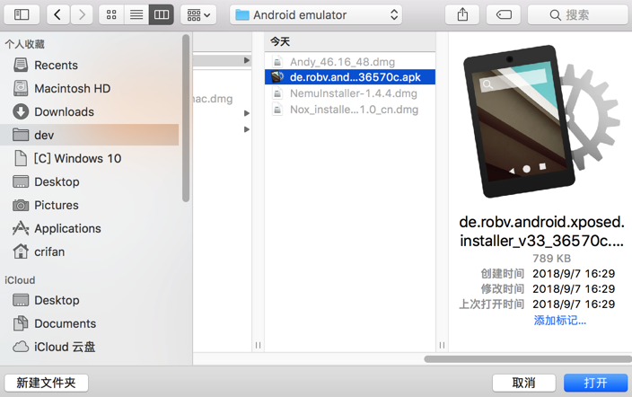
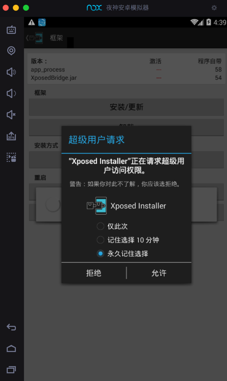
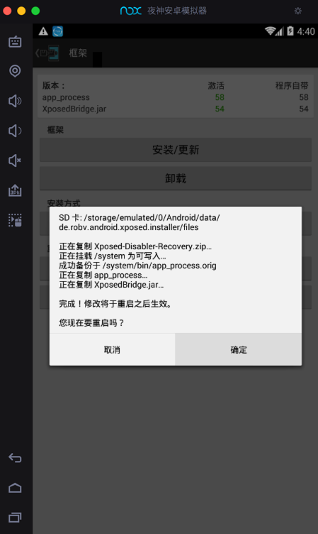

Xposed插件
用其他工具绕开https校验实现https抓包：
- 确保了手机已root
- Android：已root
- 确保后续可以安装
Xposed等工具
- 确保后续可以安装
- Android：已root
- 再去用可以绕开/禁止
SSL pinning的插件Android- 基于
Xposed的JustTrustMe- 限制：
- 只能支持
Android 7.0之前的安卓- 超过
Android 7.0就不工作了
- 超过
- 只能支持
- 限制：
- 基于
Cydia的Android-SSL-TrustKiller
- 基于
即可绕开ssl的验证，抓包到https被解密变成明文的数据。
接下来详细，如何在已root的安卓中，基于Xposed框架和相关插件，去实现绕开https证书校验，实现抓包https得到明文数据。
准备好已root的安卓
对于想要获取已root的安卓，有两种方式：
- 对于安卓
真机来说- 很久之前是很简单的事情
- 随便买个安卓手机，都容易去
root
- 随便买个安卓手机，都容易去
- 现在
- 大多数手机品牌（小米，华为等）新买到的都是安卓新版本
- 比如：
Android 8.0，Android 9.0之类的
- 比如：
- 且都很难root
- 都要向官方申请，要等很长时间（以月为单位）
- 申请先解锁
BL=BootLoader - 然后才能root
- 申请先解锁
- 而且最后还未必通过
- 都要向官方申请，要等很长时间（以月为单位）
- 结论就是：
- 现在很难买到能root的新安卓手机了
- 大多数手机品牌（小米，华为等）新买到的都是安卓新版本
- 所以
- 最终方案是：
- 去淘宝买个二手的已root的安卓手机
- 比如：400元左右的
- 二手小米4
- 型号：
MI 4 LTE-CU - 安卓系统版本：
Android 4.4.4
- 型号：
- 二手小米4
- 比如：400元左右的
- 去淘宝买个二手的已root的安卓手机
- 最终方案是：
- 很久之前是很简单的事情
- 对于安卓
模拟器来说- Mac中也有很多安卓模拟器
- 目前测试能用的有
夜神Nox安卓模拟器- 模拟的是：
Android 4.4.2
- 模拟的是：
网易MuMu安卓模拟器- 模拟的是：
Android 6.0.1
- 模拟的是：
- 其他不能用，不好用的有
- Andy：安装后无法正常运行
- 天天模拟器：没有我要的Mac版
- Genymotion：收费的，还要麻烦的去破解，暂时懒得继续试
- BlueStacks：只支持Win，不支持Mac，且也比较老旧
- 目前测试能用的有
- Mac中也有很多安卓模拟器
如前所述，已root的安卓，可以选用：
- 安卓真机
- 二手小米4：
Android 4.4.4
- 二手小米4：
- 安卓模拟器
- 夜神模拟器：
Android 4.4.2 - 网易MuMu：
Android 6.0.1
- 夜神模拟器：
中的任何一个。
此处以Mac中的夜神模拟器为例去解释。
- Mac版 夜神模拟器 Nox App Player
- 已经root了
- 模拟的是：Android 4.4.2

安装Xposed框架
在已root的安卓中，安卓Xposed框架。
根据Xposed官网解释，Xposed的版本和安卓版本需要对应，否则无法正常安装和使用：
Android 4.0.3~Android 4.4- 用
v2.7,v2.6.1的Xposed installer- 支持：此处基于
Android 4.4.2的夜神安卓模拟器
- 支持：此处基于
- 用
Android 5以上- 用
3.x版本的Xposed installer- 比如：3.5.1
- 用
下面介绍在夜神模拟器中安装Xposed的详细步骤：
下载v2.7的xposed installer的de.robv.android.xposed.installer_v33_36570c.apk：

然后拖动到夜神模拟器中，即可自动安装，安装完毕后，可以在桌面上看到：
接着点击进入Xposed Installer，再去安装Xposed框架到安卓系统中：
点击 安装/更新，在弹框中对于 超级用户请求，设置永久记住选择：

然后会去安装到系统中，再点击确定去重启：

重启后，看到Xposed框架中显示：
app_process 激活 58 程序自带 58
XposedBridge.jar 激活 54 程序自带 54

表示Xposed框架已激活，可以继续使用了。